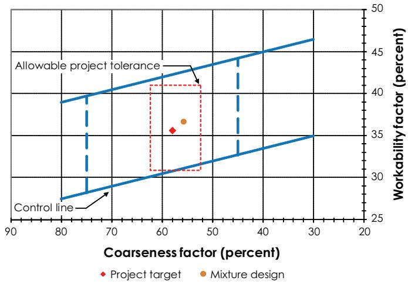
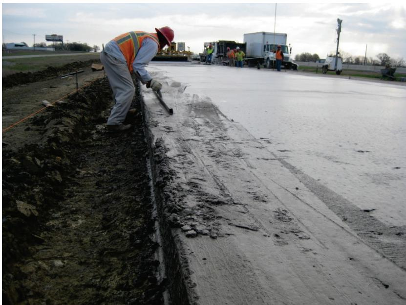
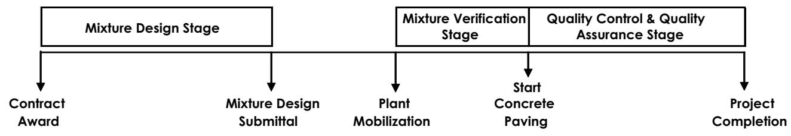
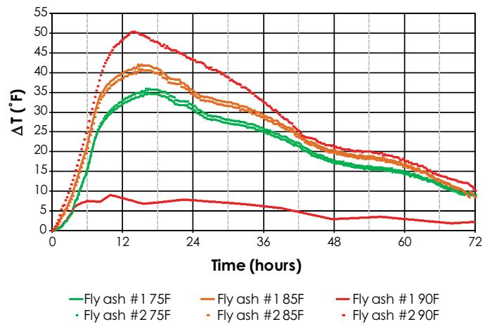

Concrete Mix Design and Quality Control
Concrete Mix Design and Quality Control (CMDC) is a systematic program that evaluates and controls the composition of concrete—cement, supplementary cementitious materials, aggregates, water and admixtures—as well as key process variables such as the water‑to‑cementitious ratio, aggregate gradation, moisture or chemical content, equipment cleanliness, calibration and mixing time to assure uniformity within each batch and across successive batches [1][2][3]. It monitors fresh‑state performance characteristics—including workability/slump, air‑entrainment, unit weight, set time, temperature and heat signature—against specified limits and verifies hardened‑state properties such as compressive strength, flexural (modulus of rupture) strength, permeability, freeze‑thaw resistance, shrinkage and alkali‑aggregate reactivity through core or beam testing, while enforcing workmanship standards via certified personnel, calibrated equipment and batch‑to‑batch uniformity metrics like the Coarseness Factor, Workability Factor and percent‑within‑limits plans [1][5][6][7][8][9][11][12][14][15]. The overarching goal is to prevent durability failures—premature joint deterioration, non‑uniform strength, segregation or early distress—and to ensure that every concrete batch placed on the project meets performance‑related specifications for strength, durability, workability and dimensional stability [1][2][3][5][6][7][8][9][11][12][14][15].
Sources (15)
Purpose and quality objectives
Concrete mix design and its quality‑control program evaluate and control the composition of the mixture (cement, supplementary cementitious materials, aggregates, water and admixtures), the target water‑to‑cementitious ratio, aggregate gradation, and moisture or chemical content; they also monitor the mixing process—equipment cleanliness, calibration, mixing time, batch‑plant operation—to assure uniformity within each batch and across successive batches. Fresh‑state performance characteristics—including workability/slump, air‑entrainment, unit weight, set time, temperature, and heat signature—are measured against specified limits, while hardened‑state properties—compressive strength, flexural (modulus of rupture) strength, permeability, freeze‑thaw resistance, shrinkage, and alkali‑aggregate reactivity—are verified through core or beam testing. The program further controls workmanship by requiring certified testing personnel and functional test equipment, and enforces batch‑to‑batch uniformity using metrics such as the Coarseness Factor, Workability Factor, and percent‑within‑limits plans. [1][2][3][5][6][7][8][9][11][12][14][15]
The following figure illustrates an example of the coarseness factor and workability factor used to monitor batch-to-batch uniformity.

Example mixture design coarseness factor and workability factor [15]The figure displays a graph plotting the Coarseness Factor against the Workability Factor to evaluate concrete mixtures.
[1] — Ch. 6 (pp. 32–34); [2] — Ch. 1 (p. 23), Ch. 3 (pp. 86–137), Ch. 7 (pp. 205–214), Ch. 8 (pp. 228–234), Ch. 9 (pp. 266–274), Ch. 10 (pp. 315–325); [3] — Ch. 2 (pp. 59–73), Ch. 5 (pp. 172–237), Ch. 6 (pp. 323–329), Ch. 7 (pp. 349–352), App. A (pp. 373–384), App. B (pp. 394–396), App. F (pp. 468–476), App. G (pp. 478–490), App. I (pp. 524–527); [5] — Mixing and Testing Equipment (p. 32); [6] — Ch. 3 (p. 38), Ch. 4 (pp. 63–82), Ch. 6 (pp. 92–93), App. A (pp. 116–117), App. B (p. 119), App. D (pp. 136–149); [7] — Ch. 5 (pp. 50–51); [8] — Scope (pp. 8–9); [9] — Ch. 5 (p. 120); [11] — 2. Factors Influencing Long-Li… (pp. 30–33), 5. Plant Site and Mixture Prod… (pp. 62–71), App. A (pp. 86–89); [12] — Ch. 5 (p. 106); [14] — Iowa Pavement (p. 25), New York Bridge Structure (p. 27), Pennsylvania Bridge Deck (p. 26); [15] — Ch. 2 (pp. 18–21), Ch. 6 (pp. 42–61), App. A (p. 120)
The concrete mix‑design and quality‑control program is directed at preventing durability failures by prevent premature joint deterioration, while also ensure that every concrete batch placed on the project meets the performance‑related specifications—strength, durability, workability, dimensional stability, and other key quality characteristics. To achieve this, the process must avoid preventing the principal problems of non‑uniform strength, segregation, premature loading damage, and early distress, because Non‑uniform concrete leads to non‑uniform performance, which in turn results in premature failure with related maintenance and rehabilitation costs. [1][2][3][5][6][7][8][9][11][12][14][15]
The following figure illustrates how non-uniform concrete leads to paving issues.

Worker smoothing fresh concrete pavement at the edge of a construction site. [11]A worker in safety gear is manually finishing the edge of a freshly poured concrete slab, while heavy machinery and other crew members are visible in the background.
[1] — Ch. 6 (pp. 32–34); [2] — Ch. 1 (p. 23), Ch. 3 (pp. 86–137), Ch. 7 (pp. 205–214), Ch. 8 (pp. 228–234), Ch. 9 (pp. 266–274), Ch. 10 (pp. 315–325); [3] — Ch. 2 (pp. 59–73), Ch. 5 (pp. 172–237), Ch. 6 (pp. 323–329), Ch. 7 (pp. 349–352), App. A (pp. 370–384), App. B (pp. 394–396), App. F (pp. 468–476), App. G (pp. 478–490), App. I (pp. 524–527); [5] — Mixing and Testing Equipment (p. 32); [6] — Ch. 3 (p. 38), Ch. 4 (pp. 63–82), Ch. 6 (pp. 92–93), App. A (pp. 116–117), App. B (p. 119), App. D (pp. 136–149); [7] — Ch. 5 (pp. 50–51); [8] — Scope (pp. 8–9); [9] — Ch. 5 (p. 120); [11] — 2. Factors Influencing Long-Li… (pp. 30–33), 5. Plant Site and Mixture Prod… (pp. 62–71), App. A (pp. 88–89); [12] — Ch. 5 (p. 106), Ch. 6 (p. 132); [14] — Iowa Pavement (p. 25), New York Bridge Structure (p. 27), Pennsylvania Bridge Deck (p. 26); [15] — Ch. 2 (pp. 19–21), Ch. 6 (pp. 42–61)
Scope and applicability
Concrete Mix Design and Quality Control is required whenever concrete pavement is placed, covering the range of materials from standard C‑mixes (C2–C6) to high‑durability mixes such as Class C‑SUD or CV‑SUD and contractor‑specified QM‑C blends. The procedure applies to all constituent materials—cement, pozzolanic or supplementary cementitious materials such as fly ash or ground‑granulated blast‑furnace slag, Portland cement, ternary or binary cementitious systems, cement types (Type I/II, blended IP/IS), optional additives (water‑reducing admixtures, ternary blends, up to one‑third Class C fly ash), aggregates (coarse, intermediate and fine, including recycled concrete aggregate when combined with virgin coarse aggregate) and water (including wash water)—and requires each material to be sourced, certified, and stored in weather‑tight silos or controlled stockpiles. The procedure must be followed throughout the entire production and placement sequence; “A mixture that may appear satisfactory in the laboratory also has to be batched, mixed, delivered, placed, finished, and cured.” It governs raw‑material handling, mixing, proportioning, trial batching, plant calibration, moisture compensation for aggregate water, equipment calibration, uniformity testing (e.g., mixer uniformity tests ASTM C94), transport (including haul‑route maintenance and cleanout) and placement methods—hand‑placed, slip‑form, fixed‑form, conveyor belts, paver‑width placements, sublot definitions, test strips—and post‑placement verification such as early‑age strength or maturity monitoring before opening to traffic. When an ingredient source is replaced or the amount required changes by more than 5 percent (excluding admixtures used within recommended dosages), trial batches are needed, and during construction “the concrete temperature, air‑void system, amount of vibration, and dowel bar locations must be monitored and adjusted as necessary.” CMDC applies to every material, process, pavement component, and project condition that influences the production of airport concrete pavements; it is mandatory for the surface course of airfield rigid pavements that will carry aircraft loads exceeding 30,000 lb. CMDC covers all concrete pavement components—runways, taxiways, aprons, or any other paved feature—and applies to every paving mix, whether hand‑placed, slipform, or fixed‑form. The scope also includes rigid highway pavement and bridge structures where the concrete incorporates ternary or binary cementitious systems, mainline pavement slabs (≈ 11 in × 26 ft), shoulder slabs tied with reinforcement, eight‑inch thick bridge decks, and associated rehabilitation components such as drainage structures, signs, markings, guiderails, box culverts, and bridge girders. It is used for slip‑form paving operations—particularly large rural sections exceeding about 50,000 sq yd where handwork is limited—and for any project where joint or crack deterioration from deicing salts, late‑season or cold‑weather conditions, or the need for lower permeability are identified; the mix design also governs pavement components such as joints that must resist salt attack and provides the required cementitious content (minimum 400 lb/yd³ for high‑durability mixes, at least 560 lb/yd³ for QM‑C). The QC plan must address project conditions including size, duration, staging, hot‑weather or cold‑weather concreting procedures, ambient temperatures ranging from the high 40 °F to the high 80 °F (or below about 80–85 °F when fly ash is used), relative humidities, wind speeds up to 20 mph, and any weather precautions. Concrete Mix Design and Quality Control also applies to partial‑depth or full‑depth pavement repair work, governing the material (fresh concrete), construction processes of mixing, proportioning, placement, testing, curing and storage, and the pavement components being repaired. [1][2][3][6][7][11][12][14][15]
The following figure illustrates the project stage timeline associated with these quality control procedures.

Project stage timeline (not to scale) [15]The figure displays a project stage timeline divided into three phases: Mixture Design Stage, Mixture Verification Stage, and Quality Control & Quality Assurance Stage. Arrows connect these phases to specific milestones including Contract Award, Mixture Design Submittal, Plant Mobilization, Start Concrete Paving, and Project Completion.
[1] — Ch. 6 (pp. 32–34); [2] — Ch. 1 (p. 23), Ch. 3 (pp. 86–136), Ch. 7 (pp. 206–207), Ch. 8 (pp. 228–234), Ch. 9 (pp. 266–270), Ch. 10 (p. 319); [3] — Ch. 2 (pp. 59–73), Ch. 5 (pp. 172–237), Ch. 6 (pp. 323–329), Ch. 7 (pp. 349–351), App. A (pp. 373–374), App. B (pp. 394–396), App. F (pp. 468–476), App. G (pp. 478–489), App. I (pp. 524–527); [6] — Ch. 3 (p. 38), Ch. 4 (pp. 63–74), App. A (pp. 116–117), App. B (p. 119), App. D (pp. 136–149); [7] — Ch. 5 (pp. 50–51); [11] — 2. Factors Influencing Long-Li… (p. 30), 5. Plant Site and Mixture Prod… (pp. 62–71), App. A (pp. 88–89); [12] — Ch. 5 (p. 106), Ch. 6 (p. 132); [14] — Iowa Pavement (p. 25), New York Bridge Structure (p. 27), Pennsylvania Bridge Deck (p. 26); [15] — Ch. 2 (pp. 18–21), Ch. 6 (pp. 42–61)
The guides agree that concrete mix design and quality‑control (CMDC) is required whenever a paving contract is subject to agency specifications – for example FAA or DOD airport pavements, Iowa DOT slip‑form projects larger than about 50,000 sq yd, or any contract where the mixture must be submitted for agency approval. CMDC must be in place before any concrete is placed; this includes laboratory pre‑qualification tests, trial batches and uniformity testing prior to production, and field verification of the mix design just before each new pavement batch is placed. The procedure also becomes mandatory when a material source is replaced or its quantity changes by more than five percent (excluding dosage‑adjusted admixtures), when any cement type, aggregate source, or admixture product is altered, and for payment‑acceptance testing of each lot (limited to the size prescribed by the agency). Acceptance testing is limited to lots not larger than 1 000 cu yd, and a control/test strip must be placed for each distinct construction method within a defined time window.
Optional / advisable actions are identified when changes are anticipated but not yet implemented – it is optional (and recommended) to prepare additional laboratory mixes using alternative constituents or varied temperatures as a backup. Field verification may be omitted only when the crew has proven experience with an essentially identical mixture, making that step optional. Contractors may also add performance‑related or other recommended tests beyond those mandated, provided they follow the same random‑sampling protocol and are documented in the project QC schedule.
Inappropriate situations include using non‑accredited laboratories, unapproved batching plants, exceeding approved mix tolerances (e.g., water‑cement ratios, cement composition limits), proceeding without an approved Concrete Quality Control Plan or approved aggregate submittals, producing acceptance lots larger than the agency‑specified maximum, and applying CMDC procedures outside of the design/prequalification stage.
Limitations that apply across the guides are: - Cementitious materials must be stored in separate, weather‑tight silos and handled to prevent cross‑contamination. - Batch‑plant scales and all equipment must be calibrated and certified (re‑calibrated each time a plant is relocated). - Mix design submittals may not be older than 180 days and must be received at least 30 days (FAA) or 21 days (DOD) before construction. - Accepted water‑to‑cement ratios are limited (e.g., w/c ≤ 0.42 for QM‑C mixes, target 0.40–0.45 for high‑durability mixes) and cement content must meet minimums (≥ 560 lb/yd³). - Coarse‑fraction (CF) and workability factor (WF) values must be recorded twice daily and kept within agency‑specified action limits (FAA ±3.5/±2; UFGS ±5/±3); exceeding these triggers corrective actions. - Flexural strength testing is required for FAA/DOD projects, with the DOD allowing compressive‑strength cylinders as an alternative. - Aggregate quality‑control testing, incompatibility testing of materials, and repeated mixture verification are mandatory before paving begins. - Plants must conform to ASTM C94 and hold current NRMCA certification or be on the agency‑approved list; laboratories must meet ASTM C1077 accreditation. - Recordkeeping of calibrations, test results, corrective actions, and lot sizes must follow agency‑defined rules. [1][2][3][6][11][15]
[1] — Ch. 6 (pp. 32–33); [2] — Ch. 3 (p. 136), Ch. 7 (pp. 205–207), Ch. 8 (pp. 228–234), Ch. 9 (pp. 270–274); [3] — Ch. 2 (pp. 59–73), Ch. 5 (pp. 172–237), Ch. 6 (pp. 323–329), App. A (p. 383), App. B (pp. 394–396), App. F (pp. 469–476), App. G (pp. 488–489); [6] — Ch. 4 (pp. 63–74), App. A (p. 116); [11] — 2. Factors Influencing Long-Li… (p. 30), 5. Plant Site and Mixture Prod… (p. 62), App. A (p. 88); [15] — Ch. 6 (p. 61)
Test methods and procedures
Standardized test methods, equipment, and step‑by‑step procedures required for concrete mix design and quality control are organized as follows.
Design and mixture study – An accredited laboratory performs the mixture design under professional‑engineer supervision in accordance with ASTM C1077. Proportions are calculated using the Portland Cement Association’s Design and Control of Concrete Mixtures together with the FAA coarseness factor (CF) and workability factor (WF). The absolute‑volume method is used, adjusting for aggregate moisture, and material incompatibility testing is performed according to FHWA‑HRT‑06‑080 (foam drainage, modified ASTM C359 stiffening, temperature‑development tests).
Aggregate verification – Aggregate gradations are verified by ASTM C136 sieve analysis on Gilson (or equivalent) sieves. A representative sample is taken for every 500 tons delivered (or at a frequency of one per 1,500 yd³) and the results are plotted to compute CF and WF and compared with agency control limits. Non‑conforming material is rejected.
Plant compliance and equipment calibration – The batching plant must conform to ASTM C94 or ASTM C685. All scales, volumetric devices, water meters, and admixture dispensers are calibrated and have current certification (NRMCA or agency‑approved roster). Daily inspections verify that aggregate bins are free of cross‑contamination, weighing devices have valid calibration certificates, the water meter is calibrated, admixture dosage is correct, mixing blades are not worn, and the plant control system is programmed with the approved mix proportions. Auger‑type mixers must have clean flights and paddles; volumetric (mobile) mixers are kept in good condition and calibrated regularly.
Trial batching and fresh‑property testing – Trial batches are produced and documented with full material lists. Workability is established using the VKelly (AASHTO TP 129) or Box Test. Fresh‑concrete properties are measured on each verification batch: - Slump recorded at five, ten, and fifteen minutes (and optionally twenty minutes). - Unit weight. - Air content measured with a standard pressure‑type air meter on the first three loads each day and after any adjustment of an air‑entraining admixture; concrete with less than 5 % air is rejected. - Water‑cement ratio determined by microwave analysis. - Heat signature evaluated with semi‑adiabatic calorimetry (ASTM C1753). - Setting time per ASTM C403. If any value falls outside the acceptable range, the verification batch is repeated until uniformity and all measured properties meet the design criteria.
Within‑batch uniformity – During production a within‑batch uniformity test is performed on the batch ribbon; Uniformity testing is performed in accordance with COE CRD‑C 55, Test Method for Within‑Batch Uniformity of Freshly Mixed Concrete (COE 1992). Mixer uniformity is also checked before producing a verification batch.
Fresh‑concrete field testing at placement – Field checks follow UFGS 32 13 14.13, measuring edge slump, joint‑face deformation and smoothness with a 12‑foot straightedge or California profilograph. Random sampling follows ASTM D3665; cores are obtained per ASTM C42, and beam specimens are collected according to ASTM C172 by combining scoops from at least five distinct points into a composite sample.
Specimen preparation – Beam molds must meet dimensional tolerances (cross‑section variation ≤1⁄8 in.; length ≥ three times depth plus 2 in.). After pouring, specimens are protected from evaporation with wet burlap and plastic, transported within fifteen minutes, and cured per ASTM C31/C31M. Consolidation is performed as required by ASTM C31: low‑slump mixes receive internal vibration using a head ≤¼ mold width, frequency ≥150 Hz (verified with a vibrating‑reed tachometer), insertions spaced ≤6 in. and applied for 5–10 s; higher‑slump mixes are rodded with a 5/8‑in. rounded rod followed by light taps.
Strength testing – - Flexural strength – Cast beams are tested in an accredited laboratory (per ASTM C1077) using ASTM C78. Current FAA specifications require flexural strength test specimens to evaluate the mixture’s strength in accordance with ASTM C78, “Standard Test Method for Flexural Strength.” Specimens are centered on the loading system and loaded at the third points after an initial load of 3–6 % of the estimated ultimate load. Loading the specimen continuously and without shock at a proper loading rate. The rate should constantly increase the maximum stress between 125 and 175 psi/min until rupture occurs. After failure, dimensions are measured and the modulus of rupture is calculated (rounded to the nearest 5 psi). Results are screened for outliers using ASTM E178 at a 5 % significance level; two specimens per sub‑lot are averaged and compared with acceptance criteria. - Compressive strength – Cylinders are fabricated and cured per ASTM C31, then tested in accordance with ASTM C39/AASHTO T22. The average 7‑day compressive strength is converted to an equivalent 28‑ or 90‑day flexural strength using the trial‑mixture correlation; the calculated value must meet the approved average flexural strength within a ±20 psi margin. - Splitting tensile – Tested per ASTM C496/AASHTO T198 when required. - Durability – Freeze‑thaw resistance evaluated in accordance with ASTM C672; permeable‑void (boil) testing and air‑content verification are performed as specified.
Thickness verification – Two cores per sublot (eight per lot) are extracted; core diameter is measured in accordance with ASTM C174, and the eight measurements are averaged to confirm lot thickness and visual integrity.
Documentation, control limits, and corrective action – All test results are recorded, entered into a QC database, plotted on control charts, and compared to design limits (CF ±3.5, WF ±2). A moving average of three consecutive compressive‑strength tests outside specification triggers an immediate summary report. Calibration certificates for scales, water meters, and testing machines (calibrated within the previous 12 months) must be on site. Any deviation from prescribed limits initiates corrective action or work stoppage. Personnel performing sampling and testing must be qualified and use calibrated equipment.
These standardized methods, required equipment, and step‑by‑step procedures constitute the complete concrete mix‑design and quality‑control program. [3][6][9][11][12][14][15]
[3] — Ch. 2 (pp. 59–73), Ch. 5 (pp. 178–236), Ch. 6 (pp. 323–329), Ch. 7 (pp. 349–351), App. F (pp. 472–476), App. G (pp. 478–489), App. I (pp. 524–527); [6] — Ch. 4 (pp. 63–74), App. B (p. 119); [9] — Ch. 5 (p. 120); [11] — 2. Factors Influencing Long-Li… (p. 33), App. A (pp. 86–89); [12] — Ch. 5 (p. 106), Ch. 6 (p. 132); [14] — Pennsylvania Bridge Deck (p. 26); [15] — Ch. 6 (pp. 42–60)
Valid concrete‑mix design and quality‑control results are achieved only when three interrelated controls are observed: equipment calibration, qualified personnel, and environmental protection. All measurement and weighing devices used at the batch plant must be accurate – “every measuring or weighing device used at the batch plant be calibrated and documented,” with a regular “Frequency of accuracy checks of scales and volumetric measuring devices” and documentation that “Batch plant scales are calibrated and certified.” Calibration is required when the plant is first erected – “Once the plant is erected and functional, the scales should be calibrated and certified,” and each time it is relocated. Volumetric mixers must be in good condition and regularly checked – “Volumetric mixing equipment, such as mobile mixers, are in good condition and calibrated on a regular basis to properly proportion mixes” and “Ensure that volumetric mixing equipment such as mobile mixers are kept in good condition and calibrated on a regular basis to properly proportion mixes.” The plant’s components, including scales, water meters and admixture dispensers, must also be verified – “The appropriate components of the plant should be calibrated and certified,” “Verify that scales are calibrated and certified,” “Verify that the water meter is calibrated,” and “Verify the admixture dispensing system for accuracy.” Vibration energy is controlled with calibrated monitors – “Vibrator monitors help equipment operators ensure that the proper amount of vibration is applied to produce homogeneous, dense concrete without adversely affecting the entrained air.”
Personnel performing design, proportioning, specimen preparation and testing must hold documented qualifications. The on‑site testing technician must satisfy contract requirements – “The concrete testing technician meets the requirements of the contract documents for training/certifi cation” and “Verify that the concrete testing technician meets the requirements of the contract documents for training/ certification.” Field and laboratory staff must possess the certifications and knowledge specified by aviation and defense standards – “Provisions for flexural strength test specimens, as well as the certifications and qualifications of field and laboratory testing technicians performing the tests are provided for in Federal Aviation Administration (FAA) P‑501 and in Department of Defense (UFGS) 32 13 14.13.” Quality‑control staff must have documented “Qualification, education, and experience of quality control personnel,” and any testing laboratory must be accredited – “QC laboratories should meet the requirements of ASTM C1077.”
Environmental controls begin with continuous monitoring of fresh concrete conditions – “During construction, the concrete temperature, air‑void system, amount of vibration, and dowel bar locations must be monitored and adjusted as necessary,” and “Concrete temperature should be monitored/ controlled to assure workability and minimize risk of cracking.” Temperature limits are enforced; concrete is kept below 85 °F – “concrete temperature below 85°F” – with chilled water on standby – “Water chillers are operational and 5,000 gallons of chilled water will be available for use whenever the concrete temperature exceeds 85°F.” Ambient conditions are recorded – “ambient, base and soil temperatures be recorded at the time of sampling, together with the concrete temperature” – and acceptable ranges are observed: relative humidity 70‑82 % (“The relative humidity ranged from 70 percent to 82 percent”), ambient air 69‑77.4 °F (“the ambient temperature ranged from 69˚F to 77.4˚F”), wind ≤7 mph (“the wind speed varied from 0 mph to 7 mph”), and concrete temperature 73‑80.4 °F (“the concrete temperature ranged from 73ºF to 80.4ºF during the recorded period”). Moisture control includes limiting water addition – “control of the water added to the mix, including both the batch water and the water introduced into the mixture with the aggregates,” maintaining stockpile moisture – “monitor and maintain moisture in the stockpiles,” and keeping mixing drums clean – “Verify that mixing drum is clean of dried materials that could break loose.” Specimen protection requires immediate covering – “Each beam must remain covered with wet burlap and plastic while transporting to maintain moisture levels” – transport time limits – “Transportation time is limited to 4 hours by FAA P‑501,” and cold‑weather insulation – “During cold weather, the RPR also must protect the specimens from freezing with suitable insulation material.” On‑site storage must be weather‑tight – “Ensure that sufficient storage area on the project site is specifically designated for the storage o concrete cylinders” – with polyethylene sheeting ready for rain protection – “Verify that sufficient polyethylene sheeting is readily available on‑site for immediate deployment as rain protection of freshly placed concrete, should it be required.” Finally, mixing equipment such as auger flights and paddles must remain free of buildup – “Auger fl ights and paddles within auger‑type mixing equipment are free of material buildup that can result in inefficient mixing operations,” and testing machines must retain current calibration – “The testing machine will be calibrated within the previous 12 months, with the calibration certificate located on site at the QC laboratory.” [2][3][5][6][9][11][12][14][15]
[2] — Ch. 3 (p. 136), Ch. 9 (p. 270); [3] — Ch. 2 (pp. 59–73), Ch. 5 (pp. 172–237), Ch. 7 (pp. 351–352), App. B (pp. 394–396), App. G (pp. 478–488); [5] — Mixing and Testing Equipment (p. 32); [6] — Ch. 4 (pp. 63–74), App. A (p. 116), App. B (p. 119); [9] — Ch. 5 (p. 120); [11] — 5. Plant Site and Mixture Prod… (p. 62); [12] — Ch. 5 (p. 106), Ch. 6 (p. 132); [14] — Pennsylvania Bridge Deck (p. 26); [15] — Ch. 2 (pp. 19–21), Ch. 6 (pp. 42–61)
Sampling and testing frequency
Concrete mix‑design and quality‑control programs determine where, how much, and how often samples are taken by linking sampling actions to material flow points, project phases, and agency specifications.
Sampling locations are anchored at the receipt of raw materials and at the point of placement. Aggregate is sampled directly from the bins that feed the batch plant “On the evening prior to or beginning of production, aggregate samples are collected …” and again “At the approximate mid‑point of the days production, the bin aggregates are sampled…”. The same material‑flow points are used for daily pre‑production testing, and additional aggregate samples are taken at delivery and stockpile points as described in the mix‑design plan. Concrete is sampled “Concrete should be sampled as close to the in‑place pavement as possible, such as in front of the paver or at the point of discharge” and also “Samples are taken at aggregate delivery and stockpile points, at the plant or mobile laboratory for fresh‑property checks, and directly on the paver (unit weight sampled ahead of the paver; three Air‑Void Analyzer cores behind the paver).” Random‑sampling procedures required by ASTM D3665 are applied when selecting concrete sampling points: “The RPR must determine the sampling locations using random sampling procedures in ASTM D3665”. A composite sample is created “obtaining samples from at least 5 different portions of the pile and combining them into one composite sample for test purposes”. Acceptance samples are also taken “QC and acceptance samples are taken at the point of delivery:” to verify temperature, slump, unit weight, air content and strength. Testing is performed “Tests should be conducted at the batch plant and, if practical, behind the paver.”
Quantities of material tested are defined by lot structures and by prescribed specimen counts. A production lot is limited to “The quantity of pavement that is evaluated for acceptance is a lot which is a shift of production not to exceed 1,000 cubic yards… The lot is divided into four approximately equal volumes (sub‑lots) of concrete for acceptance testing.” From each sub‑lot the RPR casts “FAA P‑501 requires the RPR to cast two beam test specimens from the concrete sampled from each sublot” and fabricates “For process‑control QC, eight cylinders (2 per sublot) are tested at 7 days … and another eight cylinders (2 per sublot) at 14 days…” for strength monitoring. The moving‑average rule used in many agency plans calls for “moving average of five tests falls outside of specification limits” or “moving average of three tests falls outside of the specification limits”, which determines how many compressive‑strength cylinders are required for a given level of control. Trial batches are required when an ingredient source changes by more than five percent: “When an ingredient source is replaced or the amount required changes by more than 5 percent” and “trial batches are needed.” The mix‑design verification batch consists of “An estimate of materials required to make three individual 2‑ft³ lab batches is prepared. The required material quantities, plus additional 25%, are collected from each supplier” and a field verification batch of about six cubic yards: “A 6‑yd3 trial batch of the approved mixture design is mixed and tested.” Aggregate sieve analysis follows a per‑delivery rule – “Sample and test for every 500 tons delivered” – and random sieve sampling is performed at volume thresholds such as “random sampling for sieve analysis is performed for every 1,000 ton of coarse aggregate, 500 ton of intermediate aggregate, and 800 ton of fine aggregate”.
Frequencies are driven by the construction schedule, material deliveries, and specification‑based testing intervals. “Laboratory tests must be run sometime before construction begins to prequalify materials planned for the project.” During production, “Preferably, materials‑acceptance tests should be run the day before batching is planned; although, at the height of construction, results may be needed within a few hours.” The twice‑daily aggregate sampling described above provides continuous monitoring, while cement quality is verified through “The mill certificates provided by suppliers are typically prepared once per month”. Fresh‑property checks such as unit‑weight and w/c ratio are performed “Unit weight: Twice per day” and air‑content testing is limited to “Sample the first 3 loads of each day” with a minimum acceptable value of 5 % (“Reject any concrete sampled at the plant with an air content less than 5%”). Aggregate gradation and moisture are also monitored at the rate “Gradation and aggregate moisture contents: One per 1,500 yd3”. Strength testing follows the schedule set by agency acceptance: “The final tests are those conducted by the agency to assure that the concrete they are paying for has been delivered and placed. These tests are conducted at specified intervals and at fixed ages (Table 9‑6).” Additional frequency triggers include the moving‑average limits noted above, and over a typical demonstration period “approximately eight to ten concrete batches were sampled during a normal two‑week demonstration project.” [2][3][6][11][15]
[2] — Ch. 3 (p. 136), Ch. 8 (p. 234), Ch. 9 (pp. 266–270); [3] — Ch. 2 (pp. 67–73), Ch. 5 (pp. 175–178), Ch. 6 (pp. 323–329), Ch. 7 (pp. 349–352), App. F (pp. 472–476), App. G (pp. 479–489), App. I (pp. 524–527); [6] — Ch. 4 (pp. 70–74), App. B (p. 119); [11] — 5. Plant Site and Mixture Prod… (p. 71), App. A (pp. 88–89); [15] — Ch. 2 (pp. 19–21), Ch. 6 (pp. 42–61)
The production shift is defined as a lot not exceeding 1,000 cubic yards and is divided into four approximately equal volumes (sub‑lots) for acceptance testing. Aggregate sampling must be performed before mixing; samples are collected from the bins of each aggregate type that will be combined in the batch plant using the proportions used for the accepted mixture’s CF and WF, and random aggregate samples are taken at prescribed tonnage intervals—approximately one sample per 1,000 tons of coarse, 500 tons of intermediate, and 800 tons of fine material—and also at a frequency of every 1,500 yd³ for each size class to verify gradation. Concrete sampling is carried out from the same source as the pavement by a random procedure defined in ASTM D3665; for each sub‑lot a composite sample is created by scooping material from at least five different points of the batch, taken as close to the paver discharge point as practicable. When an ingredient source is replaced or the amount required changes by more than 5 percent (excluding admixtures used within recommended dosages), trial batches are needed; a trial batch should be performed prior to production to confirm that the plant is working properly and uniformity testing should be performed on the trial batch to confirm that the plant is capable of thorough mixing. If test strips are specified, they are intended to evaluate all materials, construction, and QC processes, may serve as a segment of the planned project, and must be of sufficient length and volume to allow a thorough evaluation of all specification requirements. QC and acceptance samples are taken at the point of delivery, with the first three loads each day – as well as the first three loads after any admixture dosage change – measured for air content, slump, unit weight, temperature and other properties; additional fresh‑concrete checks are made ahead of the paver for unit weight, air content, etc., and behind the paver for Air‑Void Analyzer specimens. Acceptance testing is conducted on independent random samples, not fixed‑interval samples, to avoid bias. The overall sampling plan follows a random‑sampling worksheet that ties sample times and locations to the cumulative volume produced (e.g., fresh‑concrete checks every 500 yd³), and samples are taken directly from the points where each constituent enters the process, ensuring that the measurements faithfully represent the material, process, lot, and completed work. [2][3][6][11][15]
The following figure illustrates properly constructed stockpiles to support these aggregate handling requirements.
 Aerial view of a concrete aggregate stockpile facility with processing equipment. [3]
Aerial view of a concrete aggregate stockpile facility with processing equipment. [3]
The image displays an industrial site containing large, distinct piles of coarse and fine aggregates alongside a central batching plant structure equipped with conveyors and silos. This facility is the physical location where aggregate moisture content must be continuously monitored to adjust mixing water, ensuring uniformity within each batch of concrete produced.
[2] — Ch. 8 (pp. 228–234); [3] — Ch. 2 (pp. 70–73), Ch. 5 (pp. 172–237), Ch. 6 (pp. 323–329), Ch. 7 (pp. 349–352), App. B (pp. 394–396), App. F (pp. 472–476), App. G (pp. 478–489), App. I (pp. 524–527); [6] — Ch. 4 (pp. 65–74), App. D (p. 141); [11] — 5. Plant Site and Mixture Prod… (pp. 62–71), App. A (pp. 88–89); [15] — Ch. 2 (pp. 19–21), Ch. 6 (pp. 42–61), App. A (p. 120)
Acceptance criteria and tolerances
Acceptance of a concrete mix is governed by a hierarchy of numeric limits, statistical criteria, and visual/physical inspections. Numeric limits that must be met include the water‑to‑cement ratio – “Basic w/c ratio is 0.40.” with an upper bound of “Maximum w/c ratio is 0.45.”; contractor‑designed mixes may not exceed a “maximum w/c ratio of 0.42” and conventional Class C concrete targets 0.43 with a max of 0.488. The mix must contain at least the cementitious content specified – “minimum 560 lb/yd3 of cementitious content” and, for late‑season placements, “minimum of 400 lb of portland cement per yd3.” Fly ash substitution is limited to “over the 20 percent fly ash limited assigned by SUDAS 7010 and Iowa DOT 2301”. Alkali loading must be ≤ 3.0 lb/yd³ – “limiting the alkali loading of the concrete mixture to less than or equal to 3.0 lb/yd3 (1.8 kg/m3).” Pozzolan and limestone contents are controlled to within ±5 % and ±2.5 % respectively – “the amount of pozzolan does not vary more than ±5% (by mass) of the finished cement from lot to lot or within a lot.” and “the amount of limestone does not vary more than ± 2.5 % (by mass) of the finished cement from lot to lot or within a lot.” Slag cement may be used at substitution rates of 25‑55 % for FAA projects – “The FAA allows slag cement to be used at a substitution rate between 25% and 55% of the total cementitious material by mass” – and 40‑50 % for DOD projects – “the DOD allows slag cement to be used at substitution rates between 40% and 50%”. Fresh‑property limits include air content – a minimum of 5 % (“air content ≥ 5 %; "if a sample shows an air content below five percent it must be rejected."“) with typical targets of 6 % (“specified minimum, 6 percent..”, “Target air content = 6%.”) and acceptable range 4.5‑7.5 % (“Air content testing—begin with the first three batches…until three consecutive batches are within specification tolerance”). Slump is required near two inches – “The slump was 2.0 inches.” and “Target slump = 2 in.”, unit weight around 136 lb/ft³, and permeable voids <12 % (“permeable voids must stay below 12 %”). Strength criteria demand a minimum field‑cured flexural strength of 450 psi – “minimum field‑cured flexural strength of 450 psi” – with DOD projects requiring 550 psi – “minimum field cured flexural beam strength of 550 psi”. Design strengths are typically 650 psi flexural and 4,000 psi compressive (“a flexural strength of at least 450 psi before traffic…design specifications typically call for about 650 psi flexural and 4,000 psi compressive strength”). The hardened mix must not deviate more than ±250 lb/in² from laboratory values – “Are the flexural or compressive strengths from the field mixture comparable to those from the laboratory mixture (±250 lb/in2 )”. Visual/physical acceptance includes smoothness measured with a 12‑foot straightedge or profilograph within 48 h – “Smoothness as determined by the 12-foot straightedge or the California type profilograph”, a mortar‑rich surface of approximately 1⁄8 inch, aggregate uniformity, no segregation, voids, cracks, correct reinforcement depth, plan‑grade elevation within ½ inch, and limits on diamond grinding (≤10 % of sub‑lot or ≤¼ inch). Cylinders must be 5.75 ± 0.25 inches in diameter – “plain concrete cylinder diameter shall be 5.75 ± 0.25 inches” – with only one core per sub‑lot (“Only one core sample per sub‑lot is taken in accordance with ASTM C42”).
Statistical acceptance criteria require that any material substitution exceeding “more than 5 percent” trigger “trial batches are needed” and comparison of workability, setting time, air entrainment properties, and early‑age strength. All strength results must be screened for outliers per ASTM E178 at a 5 % significance level – “All individual strength tests within a lot must be checked for outliers in accordance with ASTM E178…at a significance level of 5%” – and discarded before averaging. Strength performance must satisfy the FAA rule that “85 % of the concrete would meet or exceed design strength”, that “average of any four consecutive tests to be above the design strength”, and that “No more than 20 % of tests were allowed to fall below design strength”. Control limits for consistency and workability factors are set at ±3.5 and ±2 respectively – “The action limits for the FAA are ±3.5 and ±2 for the CF and WF, respectively” – with contractors using ±2σ (action) and ±3σ (suspension). Differences between contractor QC and government spot‑check values less than 2 % are accepted; 2‑4 % require averaged values; ≥4 % demand additional testing – “Differences between contractor QC results…less than 2 % are accepted; differences of 2‑4 % trigger use of averaged values, and ≥4 % require additional testing.” Moving averages of consecutive compressive‑strength tests must remain within specification – “Agency representatives will be notified if the moving average of five tests falls outside of specification limits” and similarly for three‑test averages. Process stability is monitored with three‑sigma control limits; a sample outside these limits triggers corrective action – “If the process has been stable, calculate the 3s control limits…Sample 11-2 is outside of the 3s upper control limit.” Equipment used for testing must be calibrated and functional – “handheld concrete vibrators are the proper diameter and operating correctly”, “floats and screeds are straight, free of defects, and capable of producing the desired finih”, and compression machines must have been calibrated within the past twelve months (implied by QC plan). [1][2][3][6][11][12][14][15]
[1] — Ch. 6 (pp. 32–34); [2] — Ch. 8 (p. 234); [3] — Ch. 2 (pp. 70–73), Ch. 5 (pp. 175–213), Ch. 6 (pp. 323–329), Ch. 7 (pp. 349–352), App. F (pp. 474–476), App. G (pp. 481–489), App. I (pp. 524–527); [6] — App. B (p. 119); [11] — 2. Factors Influencing Long-Li… (pp. 30–33), App. A (pp. 88–89); [12] — Ch. 6 (p. 132); [14] — Iowa Pavement (p. 25), New York Bridge Structure (p. 27), Pennsylvania Bridge Deck (p. 26); [15] — Ch. 6 (pp. 42–60)
Quality control and process monitoring
“During production and construction the mix must be controlled for its water‑cement ratio, cementitious content, and aggregate gradation.” The specification limits “the w/c ratio [is] limited to no more than 0.42 and requires at least 560 lb/yd³ of cementitious material” and notes that “optimized gradations typically lead to a lower w/c ratio.” For high‑durability mixes the target is “target w/c ratio of 0.40 and not exceeding 0.45,” and when measurements trend upward crews “apply a low‑or mid‑range water‑reducing admixture to bring the mix back within the specified limits.”
Fresh‑state monitoring includes the “semi‑adiabatic temperature of the mixture,” “concrete slump loss and setting time,” and the “uniformity of the air‑void system, including any clustering.” Batch records must show “batch weight accuracy against laboratory trial mixes” and verify “aggregate quality such as absorption or contamination.” Field checks also require “density control in the field,” “early‑age strength indicators (maturity or three‑day compressive strength),” and “flexural performance measured by a beam test.”
The program continuously tracks “aggregate grading and moisture content, Coarseness Factor (CF) and Workability Factor (WF),” as well as “mixing time, water‑to‑cementitious material ratio, cementitious content and chemistry (including oxide analysis and alkali loading limits).” Air management is ensured by monitoring “air content and its distribution, slump loss or workability factor, ease of consolidation and bleed‑water formation,” together with “admixture type and dosage.” Each batch is recorded for “slump, air content, unit weight and temperature” and inspected for “smoothness as determined by the 12‑foot straightedge or profilograph,” “edge slump and joint face deformation…,” and dimensional checks such as “thickness from core samples, plan‑grade elevation within ±½ in., smoothness …”. Strength verification relies on “flexural strength (the primary durability indicator) and compressive strength as a secondary check,” with “control charts; any lot whose equivalent 28‑ or 90‑day flexural strength falls below the specified minimum triggers immediate mix adjustments.”
Equipment readiness is confirmed by ensuring “Auger fl ights and paddles within auger-type mixing equipment are free of material buildup that can result in inefficient mixing operations,” that “volumetric mixing equipment… calibrated on a regular basis,” and that “testing technician meets the requirements of the contract documents for training/certification.” All required tools – “All material test equipment required by the specifications is available on site and in proper working condition (typically includes slump cone, pressure‑type air meter, cylinder molds … straight edge)” – must be present.
Material control demands verification of “source, certification and storage condition of cement, supplementary cementitious materials and aggregates” and inspection of “aggregates are inspected for specific gravity, absorption, gradation, abrasion resistance, sieve passing rates and non‑alkali reactivity.” Moisture is managed through “moisture compensation for free water in the aggregates,” with storage in “separate weathertight silos to prevent moisture ingress.” The batch plant must perform “verification of the mixture proportions programmed into the batch control system,” “checking batching sequence and mixing time, and by calibrating weighing, water‑metering and admixture dispensing equipment – Verify that scales are calibrated and certified.” Ongoing records include “aggregate moisture content, prescribed w/c ratio, cementitious material contents, unit weight (measured twice daily), air content and the air‑void system (air content at discharge: One per 350 yd³),” as well as “mixture temperature and workability (VKelly or Box Test).” Early‑age performance is confirmed by “early‑age strength is verified by maturity methods or laboratory tests… compressive‑strength testing.”
Uniformity is emphasized: “produce a concrete mixture that meets or exceeds specification requirements, is uniform within each batch, and is also uniform from batch to batch.” Accordingly, the “moisture content of the aggregates should be tested frequently and the mixture proportions adjusted accordingly” and “mixer‑uniformity tests (ASTM C94) … determine the minimum mixing time needed for a homogeneous mix.”
Quality assurance asks “Are the fresh properties acceptable for the type of equipment and systems being used?” and measures “Workability (slump) is measured immediately after batching and again after a simulated transport period.” Strength consistency is checked by confirming that “Strength consistency is confirmed by comparing field flexural or compressive values with laboratory results within the specified tolerance.” Sampling regimes include “Aggregate grading (sieve analysis) and moisture content are sampled for every 500 tons delivered … out‑of‑spec material is rejected,” while “Concrete temperature, sub‑base temperature, unit weight, and entrapped air content are recorded for each batch, with fresh‑air content maintained at a minimum of 5 percent.” Scale integrity is verified by “Check for scale calibration and certification,” and trial runs are required: “Trial batches are run before regular production; their tickets are reviewed to confirm correct material proportions and admixture deliveries.”
Placement monitoring continues with “Workability is tracked by slump measurements … kept within the target range for placement,” verification that “Air entrainment is verified with air‑content tests … must stay at or above the six‑percent minimum,” and documentation of “water‑to‑cement (or cementitious) ratio is recorded to confirm compliance…” Setting times are logged: “Setting behavior—initial and final set times—is logged … to avoid premature hardening or excessive delay.” Density checks include “Density or unit weight is measured … as an indicator of proper aggregate grading and compaction.” Environmental conditions – “Environmental parameters—including ambient temperature, relative humidity, wind speed, and concrete temperature—are documented because they affect curing and workability” – are recorded alongside “Mixing time (≈90 s) and the elapsed time from discharge to placement (≤60 min) are also controlled to prevent segregation.” Long‑term performance is evaluated by “hardened‑concrete performance such as freeze‑thaw resistance is evaluated after curing.”
Finally, construction‑stage testing covers “ambient, base and soil temperatures as well as the temperature of the fresh mix,” with “slump, unit weight and air content measured both ahead of and behind the paver.” Additional checks include “mortor flow and microwave‑determined water content,” “air‑void structure via AVA samples,” “maturity sensor data, early strength through 7‑day compressive cylinders,” “set time, calorimetric heat signatures, cementitious material temperature at sampling,” and “signs of early stiffening or false set, and combined aggregate gradation.” Workability loss is tracked by “Slump and loss of workability (5, 10, 15, & 20 min.)” and moisture by “Microwave water content.” Air control follows the protocol: “Air content testing—begin with the first three batches, adjust as necessary, and continue with every batch until three consecutive batches are within specification tolerance.” All instrumentation is assured because “Batch plant scales are calibrated and certified.” [1][2][3][5][6][7][11][14][15]
The following figure illustrates example water-cement ratio quality control test data alongside corresponding concrete temperatures.
 Control chart of microwave water-to-cementitious material (w/cm) ratio and concrete temperature for the Payne County I-35 project. [15]
Control chart of microwave water-to-cementitious material (w/cm) ratio and concrete temperature for the Payne County I-35 project. [15]
The figure displays a control chart tracking microwave w/cm ratio test data against an average line and upper/lower control limits, alongside corresponding concrete temperatures plotted on a secondary axis. The chart demonstrates how tracking these metrics allows for the identification of root causes, such as increased concrete temperature affecting workability.
[1] — Ch. 6 (pp. 32–33); [2] — Ch. 1 (p. 23), Ch. 3 (pp. 86–137), Ch. 7 (pp. 206–214), Ch. 8 (p. 234), Ch. 9 (p. 270), Ch. 10 (pp. 315–325); [3] — Ch. 2 (pp. 70–73), Ch. 5 (pp. 172–237), Ch. 6 (pp. 323–329), Ch. 7 (pp. 351–352), App. F (pp. 468–476), App. G (pp. 478–489), App. I (pp. 524–527); [5] — Mixing and Testing Equipment (p. 32); [6] — Ch. 3 (p. 38), Ch. 4 (pp. 63–82), App. A (pp. 116–117), App. B (p. 119), App. D (pp. 141–146); [7] — Ch. 5 (pp. 50–51); [11] — 2. Factors Influencing Long-Li… (pp. 30–33), 5. Plant Site and Mixture Prod… (pp. 62–71), App. A (pp. 88–89); [14] — Iowa Pavement (p. 25), New York Bridge Structure (p. 27), Pennsylvania Bridge Deck (p. 26); [15] — Ch. 2 (pp. 19–21), Ch. 6 (pp. 42–61), App. A (p. 120)
The guides require immediate process adjustments or supplemental testing whenever any measured property deviates from its specified limit, shows a statistically significant trend away from the design baseline, or indicates incompatibility between materials and equipment. Triggers include a mismatch between field‑delivery acceptance tests and the prequalified laboratory baseline; a change in the manufacturer’s mill certification; material‑source deviations such as cement composition beyond ±2.5 % limestone, ±5 % pozzolan, alkali loading >3 lb/yd³, or an aggregate source that alters grading; any replacement of material sources or dosage changes greater than five percent; unexpected rise or fall in the semi‑adiabatic temperature of the batch; loss of slump beyond normal limits, abnormal setting time, or workability that does not meet equipment requirements either immediately after batching or after simulated transport; fresh properties unsuitable for the equipment or system and signs of incompatibilities; air‑content readings above the maximum allowable or below the minimum requirement (including values below five percent); lack of uniformity in the air‑void system or evidence of air‑void clustering, foam drainage test slopes indicating air‑entrainment problems, or failure of the mixer‑uniformity test (ASTM C94) to confirm adequate mixing time; deviations in concrete temperature, vibration energy, vibrator‑frequency drift, or concrete temperature exceeding 85 °F; dowel‑bar positioning errors during placement; off‑spec air content or distribution, excessive slump loss, poor consolidation, bleed water formation, or workability factor (WF) and coarseness factor (CF) drifting beyond the FAA action limits; performance properties (fresh or hardened) that diverge from lab trial results, including early‑age strength indicators such as maturity or three‑day strength falling outside the design range; flexural or compressive strengths differing from laboratory values by more than ±250 lb/in² or falling below required minima (≈4000 psi compression, 650 psi flexure, FAA 450 psi, DOD 550 psi) or more than 20 psi lower than the approved average; any statistical outliers identified per ASTM E178 at 5 % significance; calorimetry heat‑signature curves that differ from the established baseline; aggregate sieve analysis results outside JMF tolerances; moisture measurements on aggregates drifting from expected values; water‑to‑cement ratio, w/c ratio above 0.48 or measured water‑cementitious ratio exceeding the designed value (e.g., 0.41); unit‑weight checks out of tolerance in twice‑daily verification; control‑chart points beyond three‑sigma limits or showing a special‑cause variability condition; compressive strength below 4,000 psi; permeable voids >12 %; any concrete‑quality metric falling outside its defined tolerance; equipment wear beyond prescribed thresholds (mixer blades >10 % depth loss, pickup/throwover blades ≥¾ in.); plant weighing scales out of calibration after relocation; and any discrepancy between contractor QC results and government test results that exceeds the accepted variance limits. In each case the guides call for halting placement, conducting additional sampling, recalibrating equipment, producing trial batches, adjusting mix proportions or admixture dosages, and performing repeat verification testing before production can resume. [2][3][6][7][11][14][15]
The following figure illustrates an example of temperature development curves used to identify material incompatibilities during testing.

Example temperature development curves for incompatibility testing of mortar samples containing fly ash. [15]One specific curve, representing Fly ash #1 at 90°F, exhibits an anomalously low heat signature compared to the other tested combinations.
[2] — Ch. 3 (pp. 136–137), Ch. 7 (pp. 206–207), Ch. 8 (p. 234), Ch. 9 (pp. 266–270); [3] — Ch. 2 (pp. 70–73), Ch. 5 (pp. 172–237), Ch. 6 (pp. 323–329), Ch. 7 (pp. 349–352), App. B (pp. 394–396), App. F (pp. 468–476), App. G (pp. 481–489), App. I (pp. 524–527); [6] — Ch. 3 (p. 38), Ch. 4 (pp. 63–82), Ch. 6 (pp. 92–93), App. B (p. 119), App. D (p. 141); [7] — Ch. 5 (pp. 50–51); [11] — 2. Factors Influencing Long-Li… (pp. 30–33), 5. Plant Site and Mixture Prod… (p. 62), App. A (pp. 88–89); [14] — Iowa Pavement (p. 25), Pennsylvania Bridge Deck (p. 26); [15] — Ch. 2 (pp. 19–21), Ch. 6 (pp. 42–61)
Nonconformance and corrective action
The guides require an immediate response when inspection or testing identifies nonconforming work or materials. First, the batch or material is isolated and rejected: “When inspection or testing reveals a parameter outside the allowable range, the first action is an immediate rejection of the non‑conforming batch or material and a halt to any ongoing work.” The contractor must also “isolate the suspect material, document its condition, and arrange for additional testing to confirm whether it can still produce an equivalent quality mix.” Prompt reporting is mandated: “When inspection or testing reveals nonconforming work or material, the QC plan requires the inspector to promptly report the condition and communicate it to the batch‑plant foreman, paving superintendent and other responsible personnel so that corrective actions—such as adjusting mix proportions, water content, or replacing worn equipment—can be taken and the disposition of the affected material documented.” If a component such as aggregate fails specification, “the contractor must halt use of that material, initiate a change‑or‑substitution request, and restart the entire material and mixture design approval process.” The QCM may need to stop paving: “When inspection or testing reveals a departure from the Concrete Quality Control Plan (CQCP), the contractor’s QCM must halt the paving operation and convene the appropriate parties to resolve the issue before any further work proceeds; this may involve adjusting the mixing, batching, or placement process, or, if necessary, removing and repairing the non‑conforming concrete.” Action limits are applied; if exceeded, “apply the established action limits and, if those limits are exceeded, invoke suspension limits to halt production until the nonconformance is corrected.” Corrective actions include adjusting mix proportions, water content, admixture dosages, or equipment: “adjusting mix proportions, water content, or replacing worn equipment” and revising the mix design: “The cause must be identified, the mix design revised (for example by adjusting admixture dosages or altering proportions), and a new trial batch produced and retested.” For field‑trial batches, “Field trial batches should be remade until the desired workability is achieved after the estimated time in transport and then tested,” and any verification batch must be repeated: “Repeat verification batch until uniformity and properties are acceptable.” When a lot exceeds tolerance limits, remedial measures such as diamond grinding, removal and replacement, or other defined actions are required: “When inspection or testing shows that a concrete lot does not meet the specified tolerances, the contractor must take corrective action appropriate to the deficiency—such as diamond grinding within the allowable limits, removal and replacement of the pavement, or other remedial work defined by the deformation and replacement thresholds.” All nonconforming items are documented, and after corrective actions the contractor monitors impact using charts: “once corrective actions are taken or adjustments are made, continued use of the chart(s) will allow the contractor to observe the impact of the changes to the process.” Finally, any revised mix must receive approval before work resumes: “Any revised mix must be reviewed and approved by the contractor and owner before work resumes.” [2][3][6][11][15]
[2] — Ch. 7 (p. 207), Ch. 9 (pp. 266–268); [3] — Ch. 2 (pp. 70–73), Ch. 5 (pp. 197–237), Ch. 7 (pp. 349–351), App. B (pp. 394–396), App. F (pp. 474–476), App. G (pp. 488–489), App. I (pp. 524–527); [6] — Ch. 4 (pp. 63–66), Ch. 6 (pp. 92–93), App. A (p. 116), App. B (p. 119), App. D (p. 141); [11] — App. A (pp. 88–89); [15] — Ch. 6 (pp. 53–60)
The work is to be corrected immediately when a control or test strip shows a deviation that can be remedied through the allowed correction procedures; after the corrective action the strip must be retested to verify compliance. After correction, if the retest results fall within the hard‑metric tolerances and meet any agreed soft‑metric criteria, the work may be accepted with the adjustment as the baseline for production paving. When daily Coarseness Factor (CF) or Workability Factor (WF) calculations fall outside their action limits, the deviation cannot be brought back by proportion changes, indicating a problem beyond normal variability; this triggers an investigation of root causes and may lead to rejection if it cannot be corrected. Contractor QC test results that differ from government spot‑check values by less than 2 % are accepted; differences between 2 % and 4 % are accepted using an averaged value (acceptance with adjustment); discrepancies of 4 % or more require re‑examination of sampling and testing procedures, additional duplicate tests, and if conformity still cannot be demonstrated the work is rejected. Work must also be corrected and retested whenever a sieve analysis of aggregates shows results that fall outside the JMF tolerances defined by the approved mix design; such material is to be rejected. Fresh concrete air content below 5 % must be rejected, while batches meeting this threshold are accepted. Any fresh‑concrete test that exceeds its maximum specification—such as an air‑content result beyond the limit—requires rejection, correction of the admixture or other dosage, and retesting; once the adjusted batch meets all required values it may be accepted with that adjustment. A quality‑control chart indicating a special‑cause condition (sample falling outside the three‑sigma upper control limit) mandates stopping work, investigating, and correcting by adjusting mix proportions; after the adjustment fresh‑property tests are repeated and if these retests fall within specified tolerances the batch is accepted with the adjusted proportions and production resumes. When verification data for slump, unit weight, three‑day compressive strength, heat signature or maturity curves show no significant deviation from the original mixture design, construction may proceed without further changes. Conversely, notable differences in verification results trigger additional investigation and possible corrective actions before paving can continue, and the material may ultimately be rejected. [3][11][15]
The following figure illustrates a control chart for the Coarseness Factor (CF) that utilizes current specification action and suspension limits to monitor these deviations.
 Control chart for CF using current specification action and suspension limits. [3]
Control chart for CF using current specification action and suspension limits. [3]
The figure displays a control chart plotting the Coarseness Factor against Test ID, featuring horizontal lines representing Upper Suspension Limit, Upper Action Limit, Lower Action Limit, and Lower Suspension Limit. A dashed black line indicates the “Value from Production Proportions,” which serves as a target baseline for the blue data points representing test results.
[3] — Ch. 5 (pp. 236–237), Ch. 6 (pp. 323–329), Ch. 7 (pp. 349–351), App. F (pp. 474–476), App. G (pp. 488–489), App. I (pp. 524–527); [11] — App. A (p. 89); [15] — Ch. 6 (pp. 53–60)
Documentation and reporting
The concrete mix‑design and quality‑control file must capture all required inspection records, test results, sampling information, certifications, and any corrective actions taken during production and construction. It shall record every inspection activity associated with the paving operation, including aggregate‑stockpile sampling, batching and transport rates, equipment usage, weather precautions, and any stop‑work or process‑adjustment decisions. Continuous records are required for concrete temperature, air‑void system measurements, vibration energy applied, and dowel bar locations observed during construction. All weighing and volumetric devices (scales, water meters, admixture dispensing systems) must have documented accuracy checks and current calibration certificates, and all calibration certificates for batch‑plant scales, weighing devices, and laboratory test equipment must be attached to the file; “Batch plant scales are calibrated and certified” is entered as proof of traceability. Daily verification logs record that batch proportions match the approved mix design, observations of mixer cleanliness, blade condition, unit weight (recorded twice per day), air content, water‑cement ratio, and other required measurements. The file includes raw‑material storage facilities (including weathertight silos or other containment units) and the stockpile management plan, with periodic inspections to identify any material exposed to adverse conditions.
Test results must include temperature control data, air‑content tests performed at the batch plant or, when practical, behind the paver, vibrator monitor readings, QC acceptance tests conducted in the field, and final agency tests at specified intervals and ages. All fresh‑state properties (workability measured by VKelly or Box Test) and compressive‑strength test results are entered, along with early‑age strength criteria, maturity‑method calculations, or laboratory tests required before opening pavement to traffic. It must capture test results that verify acceptance of the concrete, such as smoothness, edge slump, joint‑face deformation, and flexural strength from sampled cores; additional documented results shall include wet‑sieve segregation data, conventional air‑content measurements, flexural (or compressive) strength, and control‑chart values for 7‑day QC compressive strength, 14‑day acceptance strength, and 28‑/90‑day equivalent flexural strength.
Sampling information must log all sampling procedures—daily pre‑production sieve analyses of each aggregate bin (coarse‑fraction and workability values plotted against ±5 CF / ±3 WF tolerances), windrow uniformity samples taken away from the ends, fresh‑concrete companion tests (slump, air content, unit weight, temperature), core extraction for strength and petrographic analysis, and random sampling plans for aggregate deliveries (e.g., sieve analysis for every 1 000 t of coarse, 500 t of intermediate and 800 t of fine aggregate). Each sample entry shall include source, lot, sublot identifiers, time, location, batch ticket numbers, and storage method. Uniformity testing of trial batches and mixer‑uniformity checks must be performed and recorded; fresh‑batch records for each trial mix are required, capturing concrete temperature, slump (measured at 5, 10, 15 and 20 min), unit weight, air content, and any observed loss of workability.
Certifications required in the file include mill certificates for cement and supplementary cementitious materials, laboratory accreditation (e.g., current ASTM C1077), chain‑of‑custody letters, proof that the testing entity is accredited, calibration certificates for all measuring equipment, and qualification, education, and experience records of quality‑control personnel. The file must also verify that the concrete testing technician meets contract training/certification requirements and that required test equipment (slump cone, pressure‑type air meter, cylinder molds, rod, mallet, ruler, and 3‑m straightedge) is on‑site and in proper working condition.
When any monitored parameter falls outside prescribed limits, immediate adjustments to the mix, temperature control, vibration level, or dowel placement are documented as corrective actions. Corrective actions recorded shall include adjusting mix proportions, varying chemical‑admixture dosages, applying on‑site repairs, removing non‑conforming concrete, halting production, remedial grinding for surface bumps, repeating verification batches until uniformity and properties are acceptable, rejecting material, switching to alternative materials, generating summary reports, notifying the project manager or assistant project manager, performing additional confirmatory tests, and documenting the action or suspension limits that were exceeded. [2][3][6][11][12][14][15]
[2] — Ch. 3 (p. 137), Ch. 9 (p. 270); [3] — Ch. 2 (pp. 70–73), Ch. 5 (pp. 172–204), Ch. 6 (pp. 323–329), Ch. 7 (pp. 349–351), App. B (pp. 394–396), App. F (pp. 472–476), App. G (pp. 479–489), App. I (pp. 524–527); [6] — Ch. 4 (pp. 63–74), App. A (p. 116), App. B (p. 119), App. D (pp. 141–149); [11] — 2. Factors Influencing Long-Li… (p. 30), 5. Plant Site and Mixture Prod… (pp. 62–71), App. A (pp. 88–89); [12] — Ch. 6 (p. 132); [14] — New York Bridge Structure (p. 27); [15] — Ch. 6 (pp. 42–61), App. A (p. 120)
Relationship to long-term performance
The suite of measured fresh‑ and hardened‑concrete properties recorded during mix design and construction serve as quantitative proxies for the pavement’s anticipated service life and its ability to resist common distress mechanisms. A lower water‑cement ratio, which directly limits permeability, is repeatedly identified as the primary factor governing durability; mixes specified for high‑durability applications are formulated with reduced w/c ratios to curb joint deterioration from deicing salts. “Class C‑SUD and CV‑SUD mixes are used on SUDAS projects in which higher durability is desired to reduce joint deterioration due to deicing chemicals. These mixes are designed with a lower w/c ratio to reduce permeability.” Consistent aggregate gradation and thorough mixing produce a dense matrix that minimizes segregation‑induced weaknesses and shrinkage cracking, thereby extending service life. “Uniform mixing and proper aeration reduce segregation‑induced weaknesses, shrinkage cracking, and other early‑life defects that would shorten pavement lifespan.” Cement chemistry is controlled through limits on alkali content and the use of supplementary cementitious materials; compliance with fly ash specifications ensures that air‑entrainment characteristics are maintained, protecting against freeze‑thaw damage. “Measured chemical composition, density, fineness, loss‑on‑ignition (LOI) and foam index of each batch are compared to the limits set in AASHTO M 295 or ASTM C618; compliance ensures that the mix will retain its intended air‑entrainment characteristics and thus resist freeze‑thaw damage and other distress over its service life.” Uniformity checks—such as frequent aggregate moisture testing, mixer‑uniformity timing, and percent‑within‑limits monitoring—detect batch variability that would otherwise lead to premature cracking. Temperature control during placement further reduces early‑age cracking risk. Strength metrics provide the most direct link to long‑term performance: flexural strength, which reflects fatigue resistance under aircraft loading, and compressive strength, which confirms load‑capacity and durability thresholds, are required to meet or exceed design values before traffic opening. “The 28‑day compressive strength of 5,040 psi surpasses the 4,000 psi requirement, providing ample load capacity; the air‑void system with a spacing factor of 0.0055 in. and specific surface of 785 in⁻¹ satisfies freeze‑thaw durability expectations.” When all measured properties stay within their prescribed limits, the concrete is expected to achieve its designed service life—often on the order of three decades—and to resist distress from chloride ingress, freeze‑thaw cycling, alkali‑silica reaction, sulfate attack, and fatigue cracking. [1][2][3][6][7][8][11][14][15]
The following figure illustrates how variations in the water-cement ratio and air volume influence the time required for concrete to reach critical saturation.
 The influence of w/c ratio and air volume on the time required for 20 percent of the concrete to reach critical saturation (assuming 5 percent COV in w/c ratio and 15 percent COV in air content) [1]
The influence of w/c ratio and air volume on the time required for 20 percent of the concrete to reach critical saturation (assuming 5 percent COV in w/c ratio and 15 percent COV in air content) [1]
The figure plots the probability of failure against the time to critical saturation, comparing a deterministic model with probabilistic scenarios that vary water-to-cementitious ratio (w/c) and air volume.
[1] — Ch. 6 (pp. 32–34); [2] — Ch. 1 (p. 23), Ch. 3 (pp. 86–87), Ch. 9 (pp. 270–274), Ch. 10 (p. 325); [3] — Ch. 2 (pp. 67–73), Ch. 5 (pp. 175–213), Ch. 6 (pp. 323–329), Ch. 7 (pp. 351–352), App. F (pp. 469–473), App. G (pp. 478–489); [6] — Ch. 3 (p. 38), Ch. 4 (pp. 69–70), App. A (p. 116), App. D (pp. 146–149); [7] — Ch. 5 (pp. 50–51); [8] — Scope (pp. 8–9); [11] — 2. Factors Influencing Long-Li… (pp. 30–33); [14] — Iowa Pavement (p. 25), New York Bridge Structure (p. 27), Pennsylvania Bridge Deck (p. 26); [15] — Ch. 2 (pp. 19–21), Ch. 6 (pp. 42–60)
After construction is complete, a comprehensive post‑construction monitoring program is required to confirm that the placed concrete continues to satisfy all design and specification criteria. The program begins with verification of material provenance, such as the “manufacturer’s mill certification,” and proceeds with measurements of the cured mix temperature (“semi‑adiabatic temperature of the mixture”) together with checks for any loss in workability (“concrete slump loss and setting time”). Uniformity of the air‑void system is inspected for “uniformity of the air‑void system, and air‑void clustering.” Surface quality is evaluated by “Smoothness testing must be accomplished as soon as the concrete is hard enough to walk on but not later than 48 hours,” and edge geometry is checked (“Edge slump and joint face deformation (criteria defined in UFGS 32 13 14.13)”). Early‑age strength may be estimated with the maturity method (“Any testing to compare measured strength at an early age (3 days or less) … will be most accurate using the maturity method to estimate the early strength”) while field‑cured specimens are tested for flexural performance after a minimum cure period (“FAA requires that the surrounding lanes be cured for at least 7 days and attain a minimum field‑cured concrete flexural strength of 450 psi before loading by the paving machine or construction trucks” and “Operation of hauling and paving equipment is permitted on new pavement after the pavement has been cured for 7 days, … the concrete has attained a minimum field cured flexural beam strength of 550 psi”). Acceptance testing follows ASTM procedures: flexural beams are cast and tested (“Strength determination must use field cured concrete specimens in accordance with ASTM C31/C31M”), the “flexural strength for each sublot is computed by averaging the results of the two test specimens representing that sublot,” and individual results are screened for outliers (“All individual strength tests within a lot must be checked for outliers in accordance with ASTM E178, “Standard Practice for Dealing with Outlying Observations” at a significance level of 5%”). When results are questionable, “referee testing of core samples is required”; cores are stored under conditioned conditions and evaluated so that “the average of any four consecutive test values exceeds the design strength, with no more than 20 % of the tests falling below it.” Strength data are tracked on up‑to‑date control charts (“maintain up‑to‑date control charts for strength,” showing “the 7‑day compressive strength,” “the 14‑day compressive strength (from acceptance tests)” and “the 28‑day and/or 90‑day equivalent flexural strength”). Discrepancies trigger defined actions: differences under 2 % are accepted, 2–4 % invoke averaging, and ≥ 4 % require duplicate sampling, additional core extraction, and visual inspection of thickness, aggregate distribution, voids, cracks and surface mortar (“differences under 2 % are accepted, 2–4 % trigger use of the average, and ≥ 4 % require duplicate sampling, additional core extraction (four cores per sublot), and visual inspection of thickness, aggregate distribution, voids, cracks and surface mortar.”).
Core‑based follow‑up also includes repeat QC checks on the hardened mix: “A follow‑up monitoring program repeats core QC checks: aggregate moisture verification, re‑checking water‑to‑cement ratio and cementitious material contents, recording unit weight and yield, measuring both air content and the air‑void system, and noting temperature.” Standard strength tests continue with cured cores evaluated for “compressive strength” and “flexural strength,” while early‑age requirements are confirmed before traffic opening (“early‑age strength is confirmed—by maturity‑method predictions or direct laboratory tests—before opening to traffic”). Agencies may also require performance‑based durability testing: a freeze‑thaw cycling test per ASTM C672 with visual rating after 50 cycles (“freeze‑thaw cycling test performed in accordance with ASTM C672 for a prescribed number of cycles—typically fifty—and then assigning a visual rating”) and additional freeze‑thaw testing of cores from AVA locations (“core samples are taken from Air‑Void Analyzer locations for follow‑up durability testing, including a freeze‑thaw test per ASTM C 666”). Permeable‑voids assessment may be added (“additional specimens undergo a permeable‑voids test (ASTM C 642) that is compared with rapid chloride penetration results.”) These evaluations verify that “the spacing factor, specific surface and air‑bubble stability observed during placement remain within acceptable limits.” Finally, the agency may conduct a beam test to measure modulus of rupture (“Beam Test” – “A method of measuring the flexural strength (modulus of rupture) of concrete by testing a standard unreinforced beam”). All post‑construction activities are documented and reviewed periodically, with control charts used to detect drift toward specification limits (“If control charts are constructed well and are reviewed periodically, issues with processes can be identified quickly and the user can respond to the issues in a timely manner.”) [2][3][6][14][15]
The following figure illustrates the correlation between compressive and flexural strength as derived from the relevant design equations.
 Comparison of compressive and flexural strength correlations, based on equations 3.1 and 3.2 [2]
Comparison of compressive and flexural strength correlations, based on equations 3.1 and 3.2 [2]
The figure displays a graph plotting Flexural strength against Compressive strength for concrete. Two linear models are compared: one defined by the equation MR = 9 * sqrt(f’c) and another by MR = 2.3 * f’c^(2/3).
[2] — Ch. 3 (p. 137), Ch. 9 (pp. 266–270), Ch. 10 (p. 315); [3] — Ch. 2 (pp. 70–73), Ch. 5 (pp. 172–236), Ch. 7 (pp. 349–352), App. G (pp. 478–489), App. I (pp. 524–527); [6] — Ch. 4 (p. 82), Ch. 6 (pp. 92–93), App. A (p. 117), App. D (pp. 146–149); [14] — Iowa Pavement (p. 25), New York Bridge Structure (p. 27), Pennsylvania Bridge Deck (p. 26); [15] — Ch. 2 (pp. 19–21)
References
- J. Weiss, M. T. Ley, L. Sutter, D. Harrington, J. Gross, and S. L. Tritsch, "Guide to the Prevention and Restoration of Early Joint Deterioration in Concrete Pavements," National Concrete Pavement Technology Center Iowa State University, Rep. InTrans Project 15-555; TR-697, 2016. [Online]. Available: https://www.cptechcenter.org/wp-content/uploads/2018/03/2016_joint_deterioration_in_pvmts_guide.pdf
- P. Taylor, T. Van Dam, L. Sutter, and G. Fick, "Integrated Materials and Construction Practices for Concrete Pavement: A State-of-the-Practice Manual," National Concrete Pavement Technology Center, Rep. Part of InTrans Project 13-482; TPF-5(286), 2019. [Online]. Available: https://www.cptechcenter.org/wp-content/uploads/2019/12/IMCP_manual.pdf
- T. L. Cavalline, G. Voigt, J. Stempihar, J. Lafrenz, T. Van Dam, M. Boyle, D. Johnson, and Rohan Reddy Jonna, "Best Practices Manual: Quality Control and Quality Acceptance of Concrete Airport Pavement," University of North Carolina at Charlotte, Rep. ACPTP-2022-4, 2025. [Online]. Available: https://www.cptechcenter.org/wp-content/uploads/2026/03/ACPTP-2022-4_QC_QA_of_concrete_airfield_pvmt_manual_w_cvr_508.pdf
- R. O. Rasmussen, P. D. Wiegand, G. J. Fick, and D. S. Harrington, "How to Reduce Tire-Pavement Noise: Better Practices for Constructing and Texturing Concrete Pavement Surfaces," National Concrete Pavement Technology Center, Rep. DTFH61-06-H-00011 Work Plan 7; TPF-5(139), 2012. [Online]. Available: https://www.cptechcenter.org/wp-content/uploads/2018/08/How_to_Reduce_Tire-Pavement_Noise_final.pdf
- D. P. Frentress and D. S. Harrington, "Guide for Partial-Depth Repair of Concrete Pavements," Institute for Transportation, Iowa State University, 2012. [Online]. Available: https://www.cptechcenter.org/wp-content/uploads/2018/08/PDR_guide_Apr2012.pdf
- T. L. Cavalline, G. J. Fick, and A. Innis, "Quality Control for Concrete Paving: A Tool for Agency and Industry," National Concrete Pavement Technology Center, 2021. [Online]. Available: https://www.cptechcenter.org/wp-content/uploads/2021/12/QC_for_concrete_paving_web.pdf
- T. Van Dam, P. Taylor, G. Fick, D. Gress, M. Van Geem, and E. Lorenz, "Sustainable Concrete Pavements: A Manual of Practice," National Concrete Pavement Technology Center, 2011. [Online]. Available: https://www.cptechcenter.org/wp-content/uploads/2018/03/Sustainable_Concrete_Pavement_508.pdf
- T. Van Dam and P. Taylor, "Commentary on AASHTO R 101, Developing Performance Engineered Concrete Pavement Mixtures," National Concrete Pavement Technology Center, 2024. [Online]. Available: https://www.cptechcenter.org/wp-content/uploads/2024/06/commentary_on_AASHTO_R_101_manual_web.pdf
- K. Smith, M. Grogg, P. Ram, K. Smith, and D. Harrington, "Concrete Pavement Preservation Guide (Third Edition)," National Concrete Pavement Technology Center, 2022. [Online]. Available: https://www.cptechcenter.org/wp-content/uploads/2022/08/concrete_pvmt_preservation_guide_3rd_edition_web.pdf
- S. M. Taylor and G. E. Halsted, "Guide to Lightweight Cellular Concrete for Geotechnical Applications," National Concrete Pavement Technology Center, Iowa State University, Rep. PCA Special Report SR1008P, 2021. [Online]. Available: https://www.cptechcenter.org/wp-content/uploads/2021/01/guide_to_LCC_for_geotech_apps.pdf
- G. Fick, P. Taylor, R. Christman, and J. M. Ruiz, "Field Reference Manual for Quality Concrete Pavements," The Transtec Group, Rep. FHWA-HIF-13-059; DTFH61-08-D-00019-T-10002, 2012. [Online]. Available: https://www.cptechcenter.org/wp-content/uploads/2018/08/hif13059.pdf
- K. D. Smith, T. E. Hoerner, and D. G. Peshkin, "Concrete Pavement Preservation Workshop," National Concrete Pavement Technology Center, 2008. [Online]. Available: https://www.cptechcenter.org/wp-content/uploads/2018/08/preservation_reference_manual.pdf
- G. Fick, D. Merritt, and P. Taylor, "Implementation of Best Practices for Concrete Pavements: Guidelines for Specifying and Achieving Smooth Concrete Pavements," National Concrete Pavement Technology Center, 2019. [Online]. Available: https://www.cptechcenter.org/wp-content/uploads/2019/12/smooth_concrete_pvmt_guidelines_w_cvr.pdf
- P. Taylor, "The Use of Ternary Mixtures in Concrete," National Concrete Pavement Technology Center, Rep. DTFH61-06-H-00011; InTrans Project 05-241, 2014. [Online]. Available: https://www.cptechcenter.org/wp-content/uploads/2014/08/ternary_mix_manual-508-compliant-w-Iowa-DOT-statements.pdf
- G. J. Fick, "Testing Guide for Implementing Concrete Paving Quality Control Procedures," National Concrete Pavement Technology Center/Center for Transportation Research and Education Iowa State University, 2008. [Online]. Available: https://www.cptechcenter.org/wp-content/uploads/2018/03/testing_guide.pdf